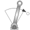
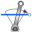
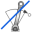

PartialTorquePartial model of a torque acting at the flange (accelerates the flange) |

|
Information
This information is part of the Modelica Standard Library maintained by the Modelica Association.
Partial model of torque that accelerates the flange.
If useSupport=true, the support connector is conditionally enabled
and needs to be connected.
If useSupport=false, the support connector is conditionally disabled
and instead the component is internally fixed to ground.
Parameters (1)
| useSupport |
Value: false Type: Boolean Description: = true, if support flange enabled, otherwise implicitly grounded |
|---|
Connectors (2)
Extended by (7)
|
Modelica.Mechanics.Rotational.Sources
Simple model of a rotational eddy current brake |
|
|
Modelica.Mechanics.Rotational.Sources
Constant torque, not dependent on speed |
|
|
Modelica.Mechanics.Rotational.Sources
Constant speed, not dependent on torque |
|
|
Modelica.Mechanics.Rotational.Sources
Constant torque changing sign with speed |
|
|  |
Modelica.Mechanics.Rotational.Sources
Constant torque, not dependent on speed |
|
Modelica.Mechanics.Rotational.Sources
Quadratic dependency of torque versus speed |
|
|  |
Modelica.Mechanics.Rotational.Sources
Linear dependency of torque versus speed |